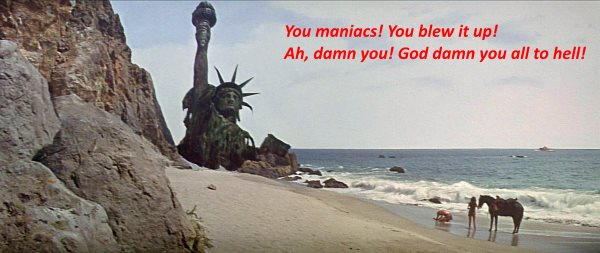

苏联部队已以双方互射核弹头短程弹道导弹的恶性交锋重创西德，并且仍在涌过富尔达缺口（Fulda Gap）和北德平原。西柏林落入苏军之手。第三次世界大战已全面爆发，苏联核弹头击中欧洲城市和工业区。攻击伦敦的轰炸机被皇家空军拦截，但该市被苏联中程弹道导弹倾泻而下引发的火风暴摧毁。
福特总统下令美国所有核力量投入行动，动用国家安全委员会 NSC 162/2 指令中制定的初步计划。美国 B-52 和 FB-111 轰炸机被派往苏联境内的目标。同时起飞的俄罗斯 Tu-95 和 3M 轰炸机蜂拥越过加拿大边境。
超过200枚弹头在俄罗斯被引爆；27枚抵达美国境内的目标，具体包括华盛顿特区、纽约、芝加哥、洛杉矶、西雅图、斯波坎，以及18个军事基地，其中包括洲际弹道导弹阵地（多数在北部，但也包括弗吉尼亚州的诺福克造船厂和基地）。在俄罗斯，超过两打苏联城市被摧毁，还有几乎同样多的大型军事设施。
尤里·安德罗波夫（Yuri Andropov，克格勃主席）和米哈伊尔·戈尔巴乔夫（Mikhail Gorbachev，最高苏维埃第一书记）等最高领导人，在俄罗斯西部的军事掩体中丧生；苏联总理列昂尼德·勃列日涅夫（Leonid Brezhnev）幸存。
战争头几天，约80%的美国战略力量和90%的苏联战略力量被摧毁。到11月，据估计苏联仅剩不到十余架具备核打击能力的轰炸机，以及极少数可用的洲际弹道导弹和潜射弹道导弹。与此同时，约40架美国 B-52 仍可作战。
迄今为止，核交锋仅限于美国、苏联和欧洲。幸存的北约部队和西太平洋部队正在部署，以应对剩余的苏联威胁。世界正站在灭绝的边缘……

“当心人类这头野兽，因为他是魔鬼的爪牙。在上帝的所有灵长类中，唯有他为取乐、为欲望或为贪婪而杀戮；他会为了占有兄弟的土地而谋杀自己的兄弟。不要让他大量繁衍，因为他会把你的家园和他的家园变成荒漠。避开他；把他赶回他的丛林巢穴，因为他是死亡的先驱……”
立法者（Lawgiver，出自《人猿星球》中 Cornelius 之口）